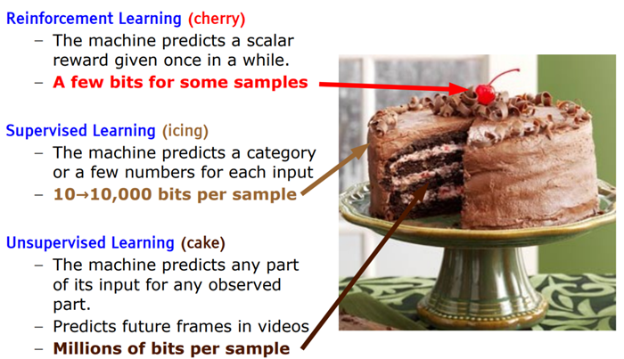

A key element we are missing is predictive (or unsupervised) learning: the ability of a machine to model the environment, predict possible futures and understand how the world works by observing it and acting in it.
私たちが欠いている重要な要素は、予測学習（または教師なし学習）である。世界を観察し行動することによって環境をモデル化し、起こり得る将来を予測し、世界がどのように機能するかを理解する機械の能力である。
If intelligence was a cake, unsupervised learning would be the cake, supervised learning would be the icing on the cake, and reinforcement learning would be the cherry on the cake. We know how to make the icing and the cherry, but we don’t know how to make the cake.
知能をケーキに例えるなら、教師なし学習はケーキであり、教師あり学習はケーキの飾り、強化学習はケーキ上のサクランボぐらいである。私達はケーキの飾りやサクランボの作り方はわかってきたがケーキ本体の作り方はわかっていない

Unsupervised pre-training is starting to work quite well for learning visual representations.
教師無し事前トレーニングは、視覚的表現を学ぶために非常にうまく動作し始めています。